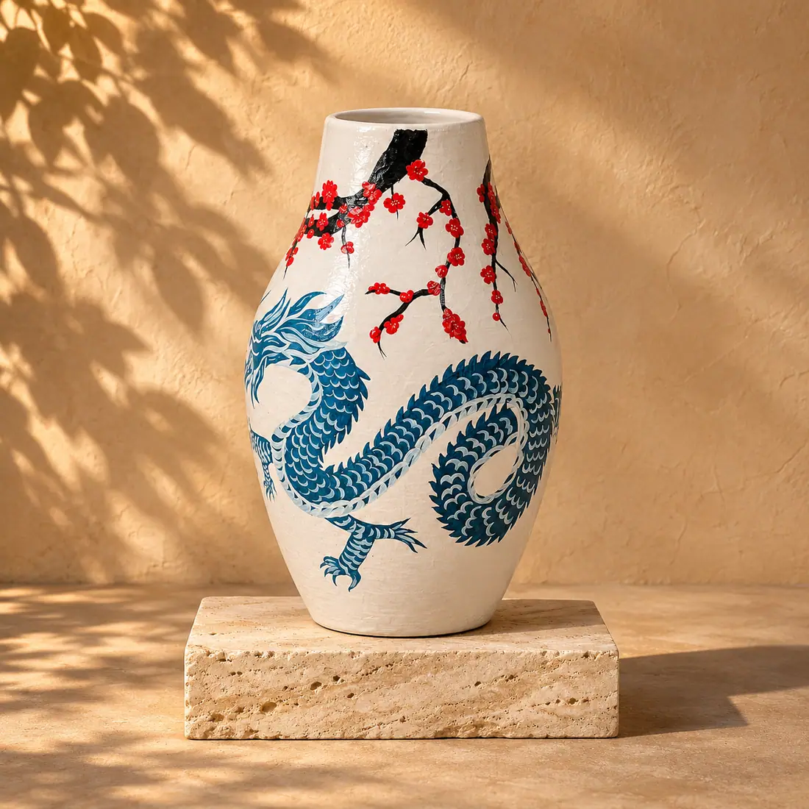
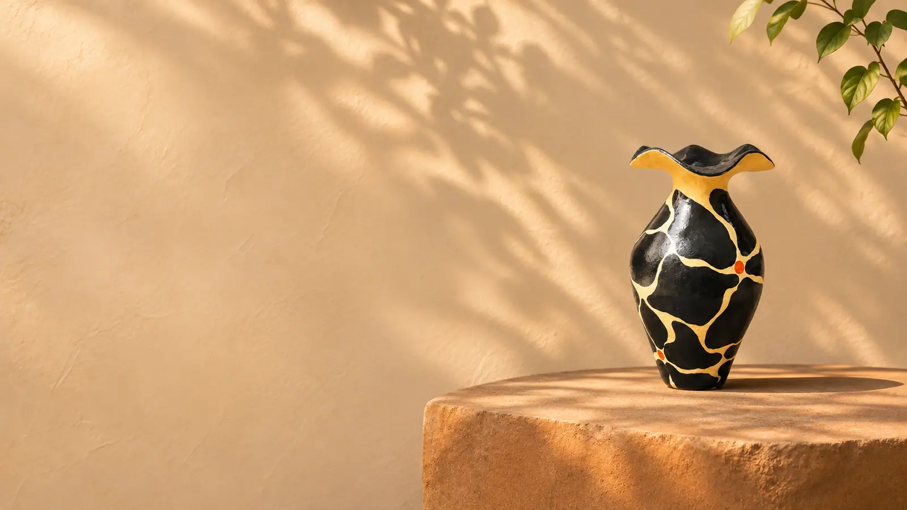
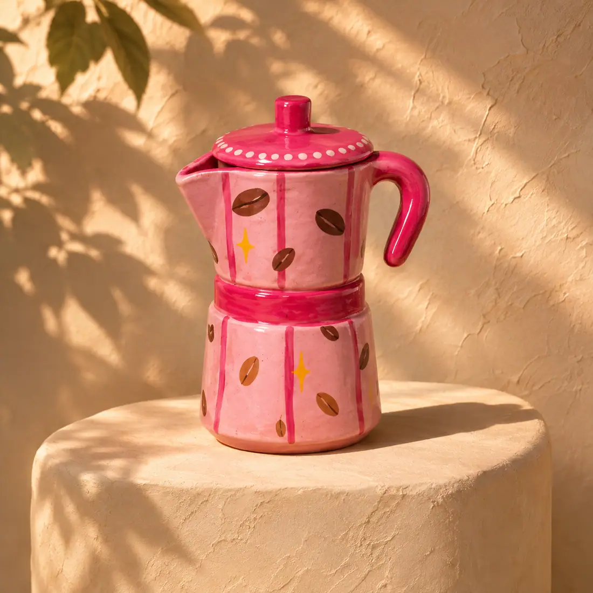
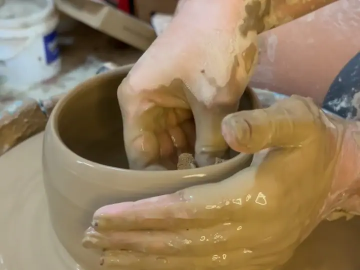

Por encargoJarrones y macetas
De 8 a 30 cm, en los colores que elijas.
Ideas que pasan por el barro y se convierten en objetos para usar, regalar y guardar cerca.

Todo se hace por encargo y a tu medida. Elige una pieza que te inspire y cuéntanos cómo la quieres.

Una referencia, un recuerdo, tu mascota o una historia. Elige la pieza, el tamaño y los detalles, y mira al momento cuánto costaría. Desde la web no se paga nada.
Los talleres de Arca son un espacio para probar, conversar y crear algo propio. Las fechas y lugares se anuncian según cada colaboración.
Consultar próximos talleres
Arca ha sido hobby, reto y sueño. Hoy cada pieza lleva algo del camino, de las manos que la hicieron y de la comunidad que acompaña el proyecto. ¿Tienes una duda? Escríbenos.